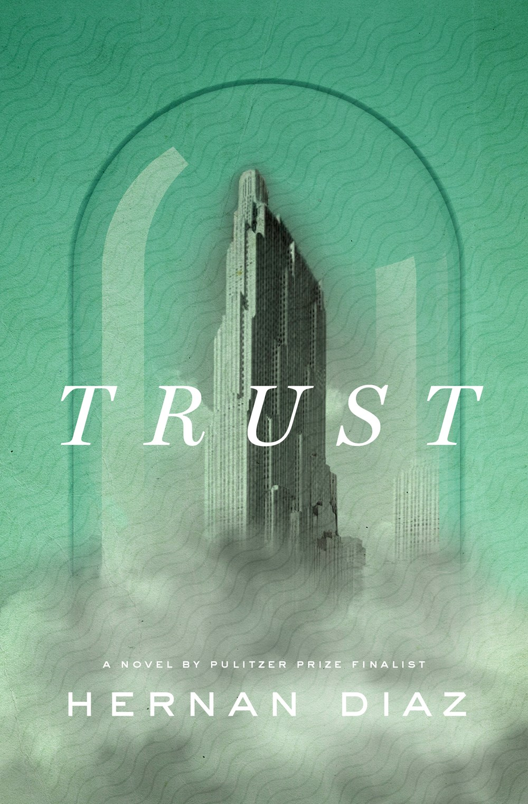
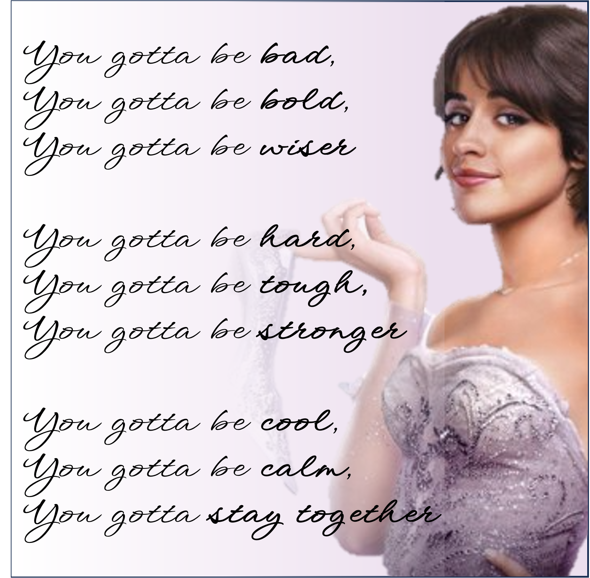
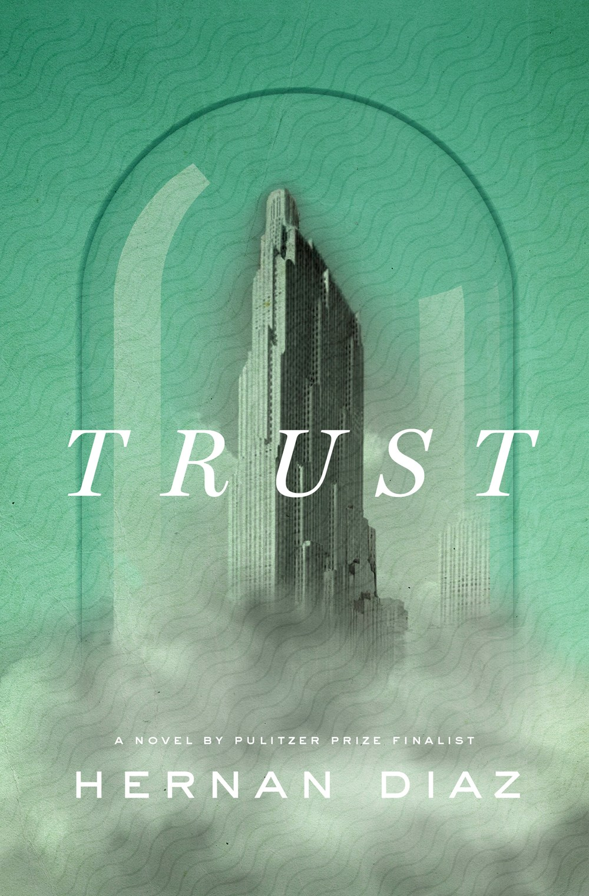
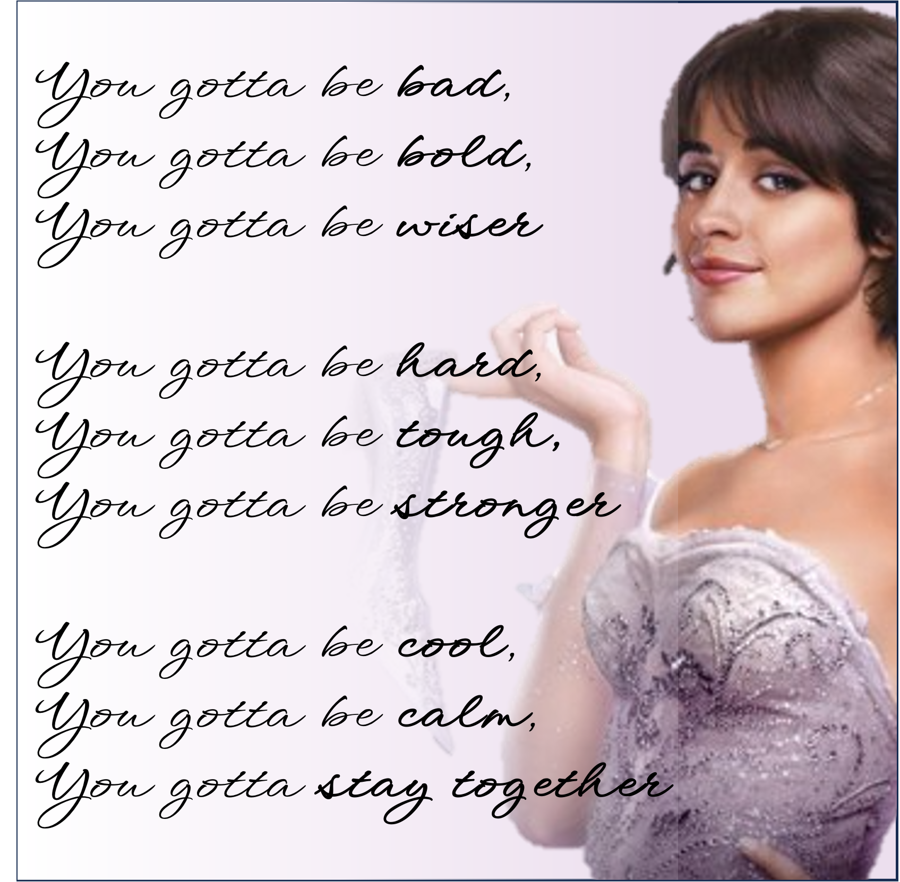
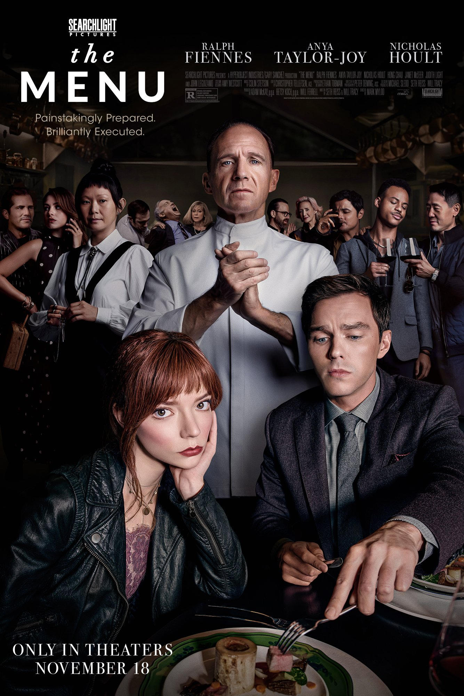
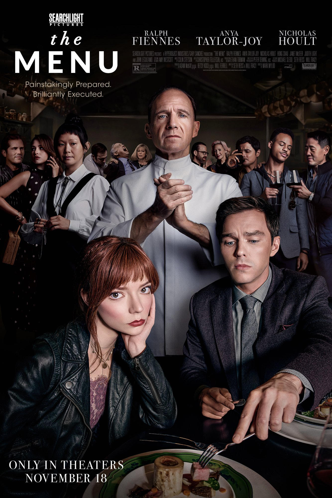
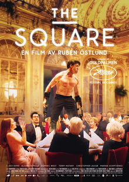

2023


 





 



waaaain wain wain estanna... the years go by ŸÉŸÑ ÿ≥ŸÜÿ©ÿ©ÿ©ÿ© ÿ©ÿ©ÿ©ÿ© üé∂
“she told herself she did not feel regret like a hammer, striking again and again and again.” - Thorn, Anna Burke
Camilla Cabello: You gotta be bad, you gotta be bold, you gotta be wiser You gotta be hard, you gotta be tough, you gotta be stronger You gotta be cool, you gotta be calm, you gotta stay together
magrack: "Here, in Europe, when we try to get to know someone, we don’t ask questions. We enter into conversation and get to know a person by the way they think.‚Äù
magrack: Dan Harmon's Pure, Boring Story Structure Theory
magrack: Not the critic that counts
magrack: Cartoon Epistemology
articlehub: Is There Empirical Evidence on How the Implementation of a Universal Basic Income (UBI) Affects Labour Supply? A Systematic Review
magrack: Eating and Reading with Katherine Mansfield - Aimé Gasston on The Public Domain Review
magrack: Book Review: Origin of Consciousness in the Breakdown of the Bicameral Mind - Scott Alexander on Slate Star Codex
“she told herself she did not feel regret like a hammer, striking again and again and again.” - Thorn, Anna Burke
Camilla Cabello: You gotta be bad, you gotta be bold, you gotta be wiser You gotta be hard, you gotta be tough, you gotta be stronger You gotta be cool, you gotta be calm, you gotta stay together
magrack: "Here, in Europe, when we try to get to know someone, we don’t ask questions. We enter into conversation and get to know a person by the way they think.‚Äù
magrack: Dan Harmon's Pure, Boring Story Structure Theory
magrack: Not the critic that counts
magrack: Cartoon Epistemology
articlehub: Is There Empirical Evidence on How the Implementation of a Universal Basic Income (UBI) Affects Labour Supply? A Systematic Review
magrack: Eating and Reading with Katherine Mansfield - Aimé Gasston on The Public Domain Review
magrack: Book Review: Origin of Consciousness in the Breakdown of the Bicameral Mind - Scott Alexander on Slate Star Codex
2022
